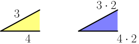
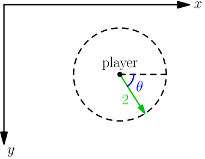

Geometry and Trig¶
This chapter contains useful stuff that isn't too difficult to get started with. You'll find it especially useful if you like writing games, and this chapter contains a working example game.
Scaling¶
If we multiply all measurements of a shape or picture by a positive number, the size changes. For example, here the blue triangle is the yellow triangle scaled up by 2:
Note that angles do not change when scaling. These pictures represent the bottom-left corners of the above triangles, and as you can see, they are identical:

Scaling with a number less than 1 is known as scaling down, and it makes things smaller. For example, dividing by 2 is same as multiplying by $\frac 1 2 = 0.5$, so dividing everything by 2 does this:
Radians and Tau¶
Maybe we could measure angles somehow? A common way to do this is to draw angles on a circle arc with radius 1. Like this:

Now we can define the angle as the length of the blue arc. With this definition, the angle in the picture is about 1 because it looks like the length of the blue arc is about the same as the radius. This way to measure angles is known as radians, and the angle in the pic is 1 radian.
Here are more pictures of angles that should help you understand this:

In this tutorial, the greek tau letter $\tau$ means a full turn in radians:
$$\begin{align}\tau = 6.2831853...\end{align}$$So, if we draw a circle with radius 1, its circumference is $\tau$.

Some programming languages (e.g. new Pythons) have a tau constant, but if
your favorite language doesn't, use 2*pi instead. Here pi is the more
well-known circle constant $\pi = \tau/2 = 3.14159265...$, and almost all
programming languages have something like math.pi or Math.PI.
I find $\tau$ easier to work with than $\pi$ because if I see $\tau/4$ somewhere I know immediately that it's a quarter turn, but $\pi/2$ isn't as obvious. Of course, you can use $\pi$ if you prefer it over $\tau$.
If we scale up the above $\tau$ pic by some number $r$, the radius becomes $1 \cdot r = r$ and the perimeter becomes $\tau r$:

Now we have something that works with any circle instead of just circles with radius 1.
Exercise
Use the above $\tau r$ drawing and the below animation to conclude that $\tau=2\pi$.

The animation comes from here.
{kind=link}
Degrees¶
Degrees are an alternative to radians, and they work so that 360° is a full turn. Here ° is the degree symbol, and 360 is a number that people ended up using for historical reasons.
<Zaab1t> Akuli: is 360 really arbitrarily picked
<Akuli> i don't know or care really
<Akuli> is 12 hours arbitarily picked
We already know that 360 degrees is $\tau$ radians, but let's figure out how to convert $D$ degrees to $R$ radians. One degree is $\frac{1}{360}$ turns, so $D$ degrees is $D \cdot \frac{1}{360}=\frac{D}{360}$ turns. Similarly, $R$ radians means $\frac R \tau$ turns.
$$\begin{align}\frac{D}{360} &= \frac{R}{\tau}\end{align}$$Multiplying both sides by 360 or $\tau$ gives these:
$$\begin{align}D &= R \cdot 360 / \tau \\ R &= D \cdot \tau / 360\end{align}$$def degrees2radians(degrees):
return degrees * math.tau / 360
def radians2degrees(radians):
return radians * 360 / math.tau
For example, $\frac{90}{360} = \frac 1 4$, so 90° is $90 \cdot \tau / 360 = \tau\cdot\frac{90}{360} = \frac{\tau}{4}$ radians (quarter turn).
Some programming languages also have conversion functions like Python's
math.degrees() and math.radians().

The comic comes from here.
Coordinates¶
Here's a boring number line:

If we have two number lines called $x$ and $y$, we can do this:

Every point on this plane can be represented with two numbers. These are known as the $x$ and $y$ coordinates. For example, the $x$ coordinate of the red point in the below picture is $3$ and the $y$ coordinate is $-2$:

Usually $x$ goes before $y$ for historical reasons, so $(3,-2)$ means $(x,y)=(3,-2)$.
So far this probably feels like some useless gibberish that has nothing to do with real life, but most programming languages have something that works with coordinates. Usually these coordinates work so that 1 unit represents 1 pixel on the screen, and the $y$ axis is upside down compared to what mathematicians are used to. Like this:

Exercise
The location of something usually means the top left corner in programming. Where does the bottom right corner of the window go in this code?
window.resize(300, 200); // (width, height)
window.move_to(600, 500); // (x, y)
If this exercise feels difficult, grab a piece of paper and draw a picture of the whole screen with the window in it.
Trig with the Unit Circle¶
This section uses the Greek theta letter $\theta$ because mathematicians often use it to denote an angle, just like $r$ often denotes a radius. Try not to get confused; it's just a letter.
Here's a problem that combines the coordinate stuff with the radian stuff above. The unit circle means a circle with radius 1. Let's draw a unit circle in the center of the xy plane (we'll talk about other radiuses soon) and draw an angle to it.

There are quite a few things going on in the above drawing. Make sure you understand them before moving on.
Now, what are the coordinates of the red dot? Mathematicians have defined a couple functions just for solving this problem:
$$\begin{align}x &= \cos(\theta) \\ y &= \sin(\theta)\end{align}$$The function names are $\cos$ and $\sin$ for historical reasons. Almost all
programming languages have cos and sin functions, and you don't need to
know how they calculate those values with other functions yet. You just need to
know what $\sin$ and $\cos$ are.
As before, here's a pile of examples:


Here $3\tau/4 = \frac 3 4 \tau$ means three quarters of a turn.
You can check these with Python:
>>> import math
>>> math.sin(math.tau/4)
1.0
>>> math.cos(math.tau/4)
6.123233995736766e-17
Mathemathically $\cos(\tau/4) = 0$, but floats are not mathematically precise
so small errors may occur. In this case, e-17 at the end of the number
means that the value we have is 6.12323399... with the dot moved left by 17
places:
As you can see, this is just a small error.
Now it's time to generalize this to circles with a non-1 radius. Let's take this thing...

...and scale it up by $r$:

Like I said earlier, angles don't change when scaling, but lengths do. Here $\theta$ represented an angle and an arc length, so we have the old $\theta$ angle and a scaled $r\theta$ arc length.
Exercise
Let's say that a player of a 2D game should move by 2 pixels every time a
player.move() method is called. It means that the player goes to some
place on the circle with radius 2 around it:

Note how $\theta$ is measured clockwise here but we have measured it counter-clockwise until now; measuring clockwise is a programming standard while mathematicians do things counter-clockwise. This means that everything works nicely with the "upside down" $y$ axis.
Let's say that player.x and player.y are the current coordinates as
floats (they may need to be rounded to ints when actually drawing things),
player.speed is 2 and player.angle is $\theta$. Write a
player.move() method using your favorite programming language.
Example: Ball and Paddle¶
Here's a minimal game written with my canvaswrapper.js script that demonstrates most things we have learned so far. Click it, press arrow up to start the game and then use arrow keys to move the paddle.
Here's the code:
var screen = new CanvasWrapper('canvas1');
const TAU = 2*Math.PI;
/* handy things:
paddle.centerx - paddle.length/2 x coordinate of left edge
paddle.centerx + paddle.length/2 x coordinate of right edge
screen.height - paddle.thickness y coordinate of top edge
screen.height y coordinate of bottom edge
*/
var paddle = {
// centerx is added later
length: 200,
thickness: 15,
speed: 10,
movement: 0, // -1 means left, 1 means right
};
/* handy things:
ball.centerx - ball.radius x coordinate of left edge
ball.centerx + ball.radius x coordinate of right edge
ball.centery - ball.radius y coordinate of top edge
ball.centery + ball.radius y coordinate of bottom edge
*/
var ball = {
// centerx, centery, angle and moving are added later
radius: 10,
speed: 10,
};
function resetGame() {
paddle.centerx = screen.width/2;
ball.centerx = screen.width/2;
ball.centery = screen.height - paddle.thickness - ball.radius;
ball.angle = 3*TAU/4; // up
ball.moving = false;
}
resetGame();
runRepeatedly(function() {
screen.fill('black');
screen.drawRectangle(
// left x, top y, width, height, color
paddle.centerx - paddle.length/2, screen.height - paddle.thickness,
paddle.length, paddle.thickness, '#00ff00');
screen.drawCircle(ball.centerx, ball.centery, ball.radius, 'white');
if (ball.moving) {
if (ball.centery > screen.height) {
resetGame();
return;
}
ball.centerx += ball.speed * Math.cos(ball.angle);
ball.centery += ball.speed * Math.sin(ball.angle);
if (ball.centerx - ball.radius < 0) { // bumps left wall
ball.angle = TAU/2 - ball.angle;
ball.centerx = ball.radius;
} else if (ball.centerx + ball.radius > screen.width) { // right wall
ball.angle = TAU/2 - ball.angle;
ball.centerx = screen.width - ball.radius;
} else if (ball.centery - ball.radius < 0) { // top
ball.angle = -ball.angle;
ball.centery = ball.radius;
} else if (ball.centery + ball.radius > screen.height - paddle.thickness) {
// paddle?
paddleLeft = paddle.centerx - paddle.length/2;
paddleRight = paddle.centerx + paddle.length/2;
if (paddleLeft < ball.centerx && ball.centerx < paddleRight) {
// yes, it hits the paddle
ball.angle = -ball.angle;
ball.centery = screen.height-paddle.thickness-ball.radius;
// also adjust the angle depending on which side of the paddle the
// ball hits
ball.angle += (ball.centerx - paddle.centerx) / 100;
}
}
paddle.centerx += paddle.movement*paddle.speed;
}
screen.getEvents().forEach(evt => {
if (evt.type == 'keydown') {
if (ball.moving) {
if (evt.key == 'ArrowLeft') {
paddle.movement = -1;
} else if (evt.key == 'ArrowRight') {
paddle.movement = 1;
}
} else {
if (evt.key == 'ArrowUp') {
ball.moving = true;
return;
}
}
} else if (evt.type == 'keyup' && (
(evt.key == 'ArrowLeft' && paddle.movement == -1) ||
(evt.key == 'ArrowRight' && paddle.movement == 1))) {
// cancel the previous ArrowLeft or ArrowRight press
paddle.movement = 0;
}
});
});
Exercise
A part of my game works similarly to this pseudocode:
if (the ball hits the left wall or the right wall) {
ball.angle = TAU/2 - ball.angle;
}
if (the ball hits the top wall or the paddle) {
ball.angle = -ball.angle;
}
Derive these formulas.